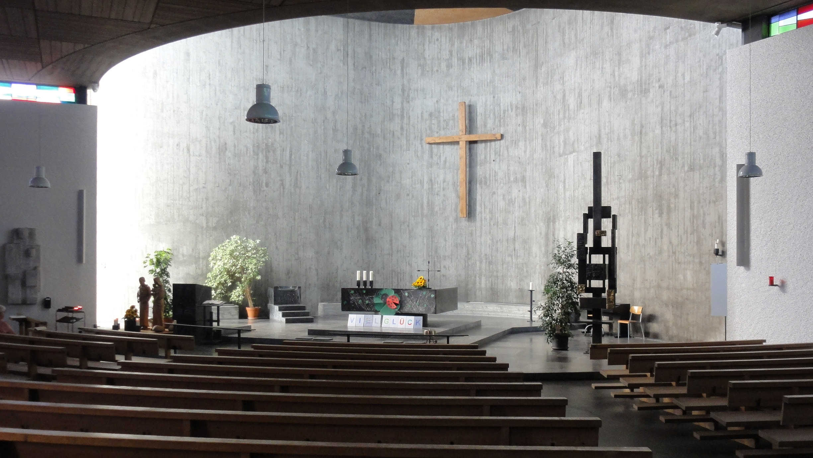
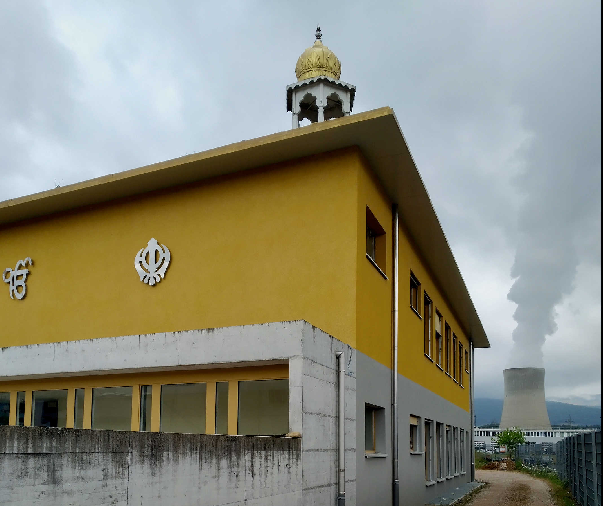

Verkehr, Industrie, AKW. Aber auch: Bewaldete Hügelzüge, Ackerflächen, Aare. Diese Assoziationen verbinden Durchreisende, die im Zug oder im Auto auf der Hauptstrasse Nummer 5 zwischen Olten und Aarau unterwegs sind, vielleicht mit dem südlichen Niederamt. Lange Zeit stark landwirtschaftlich geprägt, hatte sich das Gebiet im 19. und 20. Jahrhundert zu einem europaweit bedeutenden Standort der Schuhindustrie entwickelt (u.a. Bally in Schönenwerd, Strub, Glutz & Co. in Olten, Hug & Co. in Dulliken). In den Trente Glorieuses nach dem Zweiten Weltkrieg erlebte die Region dann einen «gewaltigen Aufbruch nach ‹vorn›», wie der Gemeindeammann von Däniken 1974 schrieb: Allein in dieser Gemeinde wurden mit dem Schnellgutbahnhof, dem Postverteilzentrum (1977) und dem Kernkraftwerk Gösgen (1979) innert kurzer Zeit mehrere grosse Infrastrukturprojekte realisiert. Heute ist der AKW-Kühlturm weit herum sichtbarer Blickfang und eigentliche «Landmarke des solothurnischen Niederamts» (Fabian Furter und Patrick Schoeck-Ritschard). An dieser Stelle interessiert freilich weniger die wirtschaftliche Entwicklung als vielmehr die Religion(en) und deren Sichtbarkeit im öffentlichen Raum.
Abseits der Dorfzentren und Verkehrsachsen
In den drei Gemeinden Däniken, Gretzenbach und Schönenwerd, auf denen im Folgenden der Fokus liegt, gibt es je einen (Kirch-) ‹Bühl›, einen Hügel, auf dem prominent eine Kirche steht: In Schönenwerd ist dies die – seit 1874 christkatholische – Stiftskirche St. Leodegar (ab dem 11. Jahrhundert; ältester erhaltener Sakralbau im Kanton Solothurn), in Gretzenbach die römisch-katholische Kirche St. Peter und Paul (1660er Jahre, 1884 erweitert), in Däniken die evangelisch-reformierte Kirche (1949). Symbolisch erhöht, zugleich aber auch eigentümlich entrückt, liegen diese Sakralbauten der drei wichtigsten christlichen Konfessionen heute etwas abseits der Dorfzentren und Hauptverkehrsachsen. Die Gründe für diese besondere Konstellation sind in der Kirchen-, aber auch in der Wirtschaftsgeschichte zu suchen, die im Niederamt in besonderem Masse miteinander verflochten sind. So etwa manifestierte sich der Kulturkampf, aus dem in den 1870er Jahren die christkatholische Kirche hervorging – nicht zuletzt mit tatkräftiger Unterstützung des Schuhfabrikanten Carl Franz Bally (1821–1899) –, hier besonders deutlich.
Verblasste Moderne
Die Modernisierungsbestrebungen des römischen Katholizismus, die im 20. Jahrhundert in den Bereichen Liturgie und Kirchenarchitektur einsetzten, zeigen sich an zwei weiteren, römisch-katholischen Kirchenbauten: Mariä Himmelfahrt in Schönenwerd (1937–1938), eine Basilika mit wuchtigen Chorflankentürmen des Architekten Fritz Metzger (1898–1973) – eines wichtigen Vertreters der schweizerischen katholischen Kirchenarchitektur im 20. Jahrhundert –, und St. Josef in Däniken (1962–1964), eine vor allem im Innern stimmig gestaltete Kirche von Hanns A. Brütsch (1916–1997) – eines Erneuerers des modernen Kirchenbaus –, die Sichtbeton und verputzte Flächen miteinander kombiniert. Heute scheint die einstige Modernität dieser beiden Gotteshäuser zumindest von aussen etwas verblasst.
St. Josef, Däniken. Innenraum (Bild: David Zimmer)

Buddhistisches Zentrum Wat Srinagarinvararam, Gretzenbach. (Bild: David Zimmer)
Sikh-Tempel (Gurdwara), Däniken. (Bild: David Zimmer)

Sikh-Tempel (Gurdwara), Däniken (Bild: David Zimmer)
autor
Weitere Artikel von {{ author.author }} finden Sie hier:
Zur Vertiefung:
- textb4link (Leerzeichen am Schluss) text